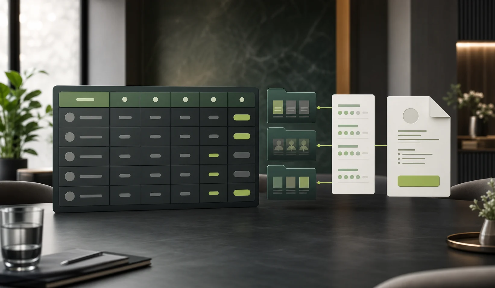

Onboarding checklist
Create tasks with owners, due dates, status, and reminders. Teams can see blockers instead of chasing updates through email.
The moment a candidate is hired, Valases creates a shared onboarding workspace so HR, the manager, IT, and the new hire can prepare together.
Use one role-linked onboarding record to coordinate preboarding work and make readiness visible before the employee's first day.
Create tasks with owners, due dates, status, and reminders. Teams can see blockers instead of chasing updates through email.
Collect employee details and required documents in one focused experience without asking the new hire to repeat their hiring information.
Track each onboarding record as not started, in progress, ready, or complete so the start date has an accountable operational view.
Hiring decisions become practical preparation—not another disconnected administrative process.

Most teams have separate tools for applicant tracking, evaluation, and employee administration. Valases connects the decisive hiring work to the operational work that starts immediately after hire.
Candidate context moves forward into onboarding, reducing duplicate forms and handoff mistakes.
Every action has a responsible person, target date, visible status, and audit trail.
New hires receive a clear, organized experience before their first day—not a stream of disconnected requests.